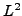

Convection dominated diffusion problems generally have solutions that are difficult to approximate numerically. Solutions with boundary layers or high gradients in directions normal to the convection are common and, as such, adaptive mesh refinement is often used to efficiently resolve the solution. This talk details current progress on an iterative approach that works similar to (and in conjunction with) adaptive mesh refinement to adaptively adjust the least-squares functional norm on which the discrete variational problem is defined.
In the general least-squares framework the finite element discretization scheme is defined by optimization principles, essentially minimizing the norm of the residual of a suitable first-order formulation of the problem. This approach is well known and has been applied to a wide class of problems. In the adaptively weighted approach we consider, the norm in which the minimization is defined is a globally weighted  norm, where the weight functions are adaptively determined by an approximate coarse solution. In essence this process is one of changing the metric of the approximation space in an optimal way as the solution is refined. In this talk we'll give an overview of the details of the approach and numerical results for convection dominated problems with boundary layers.